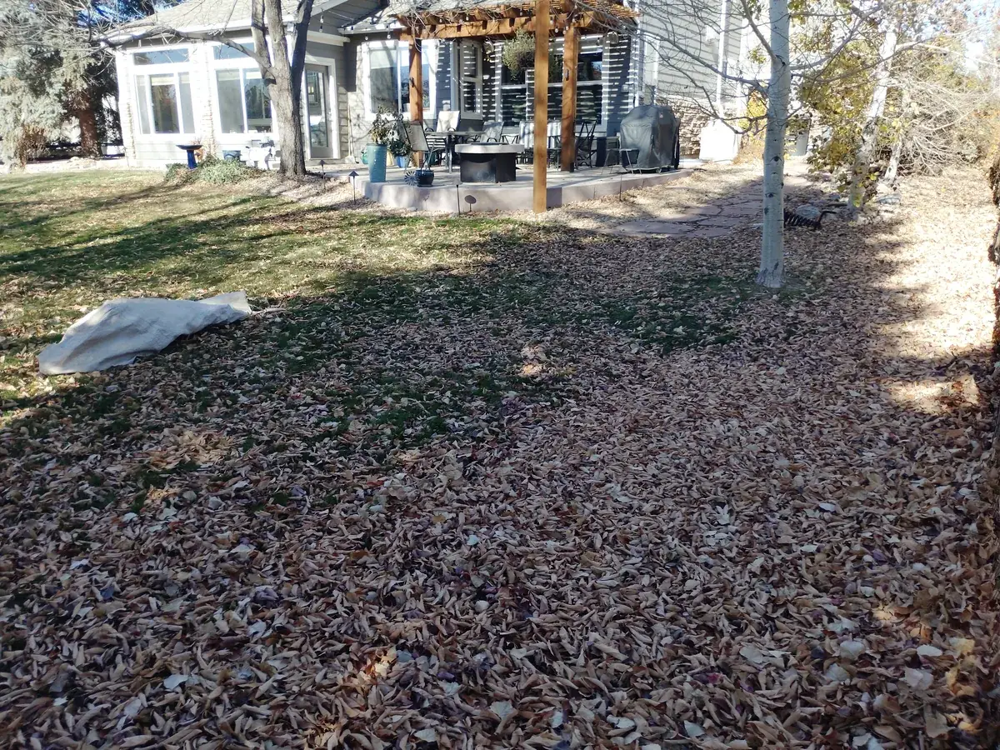
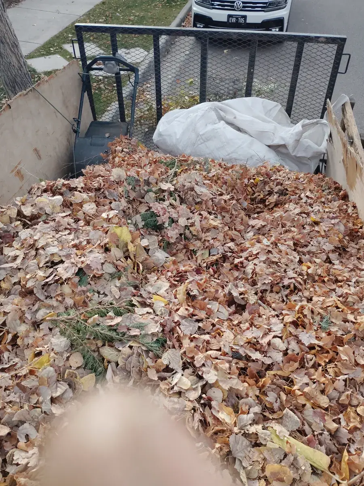
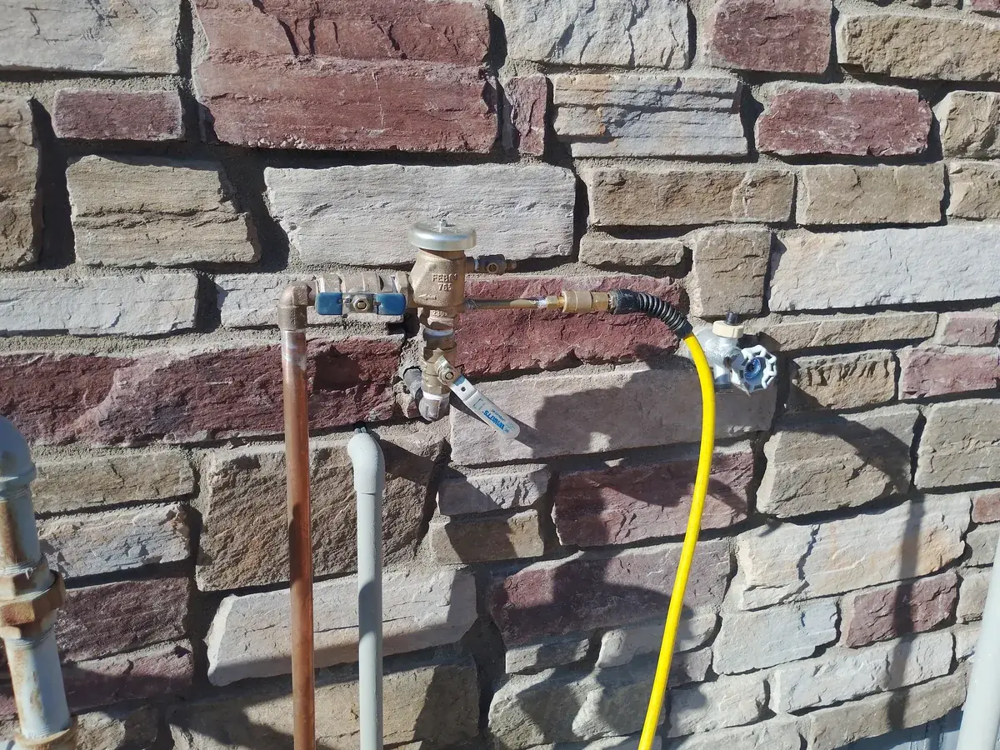

People picture fall cleanup as one job: leaves. The week of November 16 on our schedule was four jobs and sixty-eight photos, and leaves were only one of them. A cedar fence went up over two days, a stand of poplars came down, a yard's worth of roses and old edging came out and stone edging went in, and two properties got their fall cleanups and sprinkler blowouts.
That spread is normal for late November on the Front Range, and it's why we photograph the work. Not for the highlight reel: the frames are how we check our own sequencing, and how we explain to the next customer what a day actually costs in labour and haul-off.
The poplars come down once the leaves are off
Taking a mature tree down next to a fence and a house is a ladder-and-rope job before it's a chainsaw job. You limb it from the top so the pieces you drop are small enough to steer, and you keep the fall zone clear of the fence line the whole way down.
November is the good window for it. With the canopy bare, the crew can see the structure of the tree from the ground: which limbs are dead, which are load-bearing, where the lean actually goes. It's also the point in the year when a bare tree leaves the smallest mess to clean up afterwards.

The leaves are the easy part
What makes a fall visit take a day isn't raking. It's what the leaves are sitting on. Leaves left on turf smother it through the winter; leaves packed into a bed hold moisture against crowns and stems that would rather stay dry; leaves against a foundation keep the siding and the sill wet longer than they should be.
So the work moves in a particular order: beds first, then lawn, then the hard surfaces blown clean, then the pile. That last part is the one homeowners notice. Pushing a pile into the street is not cleanup, it's a transfer, and most Front Range cities treat it as a drainage and nuisance problem. Ours leaves on a trailer.

The blowout is the part with a deadline
Everything else in a fall visit can slide a week without much consequence. The sprinkler blowout can't. Water left in a system expands when it freezes, and the fitting that sits above grade, full of water, with the cold hitting it first, is the backflow preventer on the side of the house.
A blowout connects an air line to that assembly and pushes air through every zone until the water is out of the mainline, the laterals and the backflow itself. It's a short visit and a cheap one compared with what a split assembly costs to replace in the spring, plumber included.

What it means for booking the rest of the season
Fall work compresses into a short window and then stops being available at all: once the ground is frozen and the lines are blown out, the outdoor list is done until spring. If your beds are still buried and your system is still wet, the useful move is to get on the schedule now rather than after the first hard freeze shows up in the forecast.
We do the whole list in one visit, which is the point of the Fall Reset: leaf cleanup, final mow, bed re-edging, aeration and overseeding where it's needed, the blowout, and the gutters. If you're in Longmont or Boulder County, send us the property and we'll tell you what it needs and when we can get there.